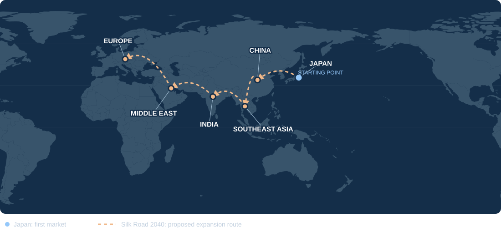

Sell in three countries.
We operate in Japan, Myanmar and Thailand. We work with you to identify the market and sales approach that fit your product.
FOR MANUFACTURERS IN CHINA & ASEAN
We source products for Japan, Myanmar and Thailand, with bases in all three countries. Start with a paid sample. If the product and terms fit, we agree on a small test order and aim to build repeat orders from real customer demand.

FOR MANUFACTURERS
One conversation. Four bases: Bangkok, Yangon, Tokyo and Sapporo.
We operate in Japan, Myanmar and Thailand. We work with you to identify the market and sales approach that fit your product.
Yuhei holds a master’s degree in mechanical engineering and spent five years in production engineering at DENSO and DENSO Manufacturing Michigan, Inc., including a one-year US assignment.
Start with samples or a small lot. Test customer response, including through crowdfunding, and expand investment when the results justify it.
PRODUCT EXAMPLES
Aluminum blankets and emergency toilets are examples of products we discuss with manufacturers. These photos are not a record of completed sales.


HOW WE START
Our starting model is purchasing products from the manufacturer. Each order is subject to an agreement on price, quantity and responsibilities.
Choose a product together. Agree on sample price and shipping, then we purchase the sample to check specifications, quality and market fit.
If the sample and terms fit, agree on a small-lot purchase or a crowdfunding test in Japan. Confirm the budget, responsibilities and success criteria before starting.
Use customer feedback and sales results to decide on improvements and further orders. Discuss territory or exclusivity when there is a clear business case.
Prefer a different arrangement? We can also discuss paid sales support or jointly funded, staged test marketing. Scope, fees and milestones are agreed separately.
First step: connect on WeChat or email us one product photo or catalog link. Then agree on sample terms or an online meeting. Contact Yuhei →
01 / THE EXPERIENCE BEHIND THE WORK
After earning a master’s degree in mechanical engineering, I began in automotive manufacturing. That foundation continues to shape how I approach products, processes and quality.
View my LinkedIn profile ↗Earned a master’s degree in mechanical engineering at a Japanese national university in 2012, then worked in production engineering at DENSO.
A one-year assignment at DENSO Manufacturing Michigan, Inc., before leaving the company. Five years in production engineering across Japan and the US.
Moved to Myanmar and co-founded BKU in Yangon in 2017. Built and sustained the business through a period of profound change.
Relocated to Thailand and began the trading business. Founded Asia Shokusan Inc., based in Bangkok.


02 / THE LONG-TERM VISION
STARTING IN JAPANA longer horizon.
One practical step at a time.
I am building a long-term vision to connect manufacturers and markets across Japan, China, Southeast Asia, India, the Middle East and Europe. Japan is the starting point.

03 / COMMUNITY
I founded Asia Shokusan Inc., a Japanese trading company, to bring the Silk Road 2040 vision to life. It will build a trade network that connects many manufacturers with many markets across countries, contributing to the prosperity of local communities and future generations. Alongside our business, we also engage in volunteering and community support.
My involvement began earlier, donating a portion of business revenue to support communities living in poverty in Myanmar and orphanages in Vietnam.


LET’S DISCUSS YOUR PRODUCT.
Start with a product photo or catalog link. We can review wholesale prices, MOQ, lead time and certifications together, then agree on sample terms or a meeting.
Yuhei YamadaConnect on LinkedIn